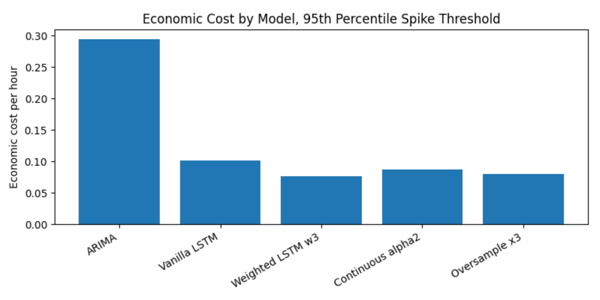
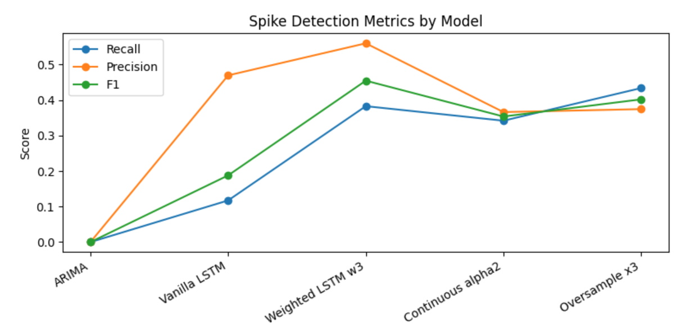
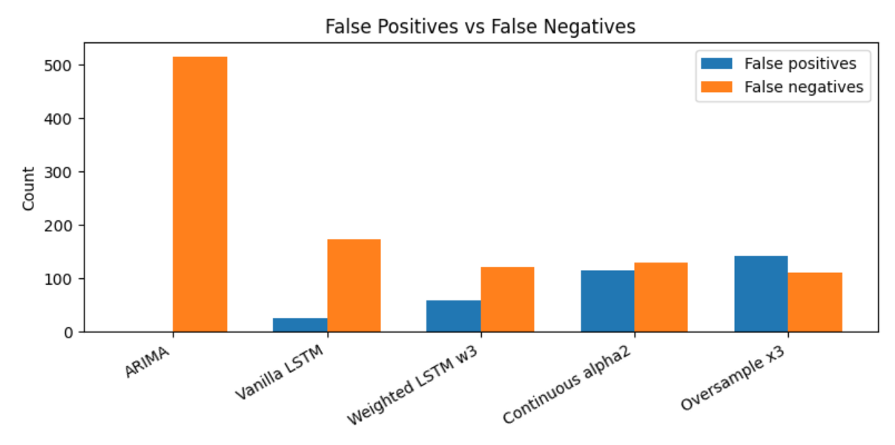
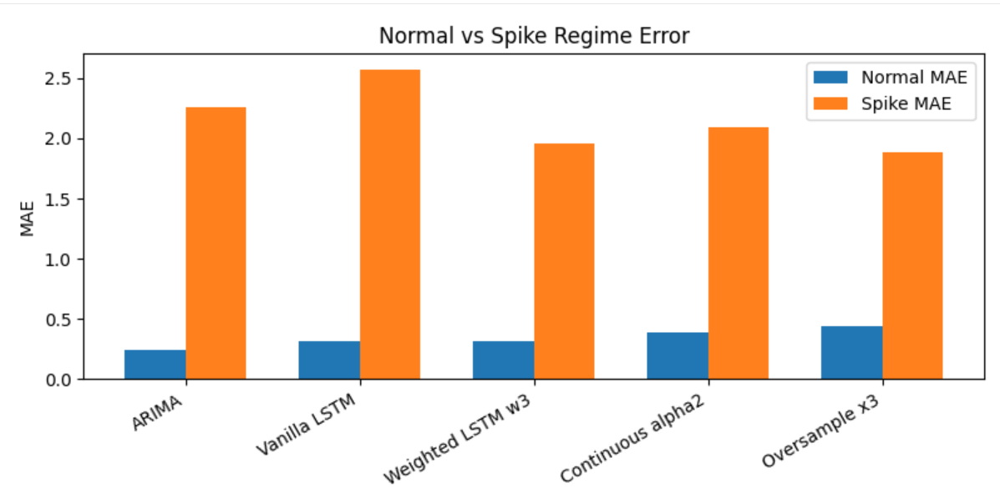

Machine Learning / Time-Series Forecasting
Electricity Forecast
ERCOT Houston Hub / Rare, high-impact events
{kind=link}

- Author
- Martin He / Carnegie Mellon University
- Focus
- Time-series forecasting and rare-event detection
- Dataset
- ERCOT Houston Hub hourly electricity prices, 2020–2023
- Models
- ARIMA and LSTM variants
- Evaluation
- Forecast error, precision, recall, F1, and asymmetric error cost
Forecasting the events that matter most
Electricity prices can appear stable until a rare, extreme movement changes the picture. This project investigates how forecasting models should handle these events when missing a spike carries a greater penalty than raising a false alarm.
The study compares a statistical baseline with several recurrent neural network approaches. Its central question is how to improve rare-event detection while keeping predictions stable during normal conditions.
Method / Data & Training
Comparing models on the same signal
Hourly prices are transformed with the inverse hyperbolic sine function, then differenced to address trend and daily seasonality. A chronological split uses 2020–2021 for training, 2022 for validation, and 2023 for testing.
In this study, a spike means an absolute value above the 95th-percentile threshold in the transformed, differenced series. It is not a fixed dollar-price threshold.
The experiments compare ARIMA, a vanilla LSTM, fixed-weight loss, continuous loss weighting, and oversampling. The selected fixed-weight LSTM applies a weight of 3 to spike errors during training.
{kind=link}

Results / Detection & False Alarms
More sensitivity is not always better
ARIMA misses most spike events, while the vanilla LSTM remains conservative. Oversampling detects more spikes but also produces more false alarms. The fixed-weight LSTM balances these competing errors and achieves the highest F1 score in the reported comparison.
The economic score assigns different penalties to missed spikes and false alarms. It measures the study's error tradeoff, rather than realized trading profit.
{kind=link}

Preserving everyday performance
Separating normal and spike periods reveals behavior that an overall error score can hide. Oversampling lowers spike error but increases normal-period error; moderate weighting provides a more balanced result.
{kind=link}

What the study suggests
In these experiments, moderate cost-sensitive training provides a better balance than either conservative predictions or aggressive emphasis on spikes. Changing the prediction threshold can move the balance between misses and false alarms, but does not improve the underlying forecast.
The study covers one electricity market and uses simplified, fixed error penalties. Residual demand, outages, and generation availability are not explicitly modeled. Incorporating these system conditions and testing other markets are directions for further work.